علّمني ربي
الليل والنهار والشمس والقمر آيات عظيمة مخلوقة مسخّرة؛ والنهار للعمل النافع، والليل للسكن وفيه أعمال يحبها الله.
يوم تطبيقي جامع ينتقل فيه الأطفال بين الأركان؛ ليسترجعوا معاني المواد السبع، ويطبقوها في مواقف محسوسة، ثم يعبروا عن أثرها في معرفتهم بالله وشكرهم وطاعتهم.


المسار الذي يحكم جميع المحطات والأسئلة والتقويم.
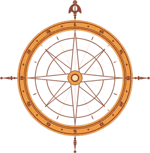
لا يكتمل اليوم بمجرد المرور على الأدوات؛ بل بظهور هذه المعاني في أداء الطفل.
الليل والنهار والشمس والقمر آيات عظيمة مخلوقة مسخّرة؛ والنهار للعمل النافع، والليل للسكن وفيه أعمال يحبها الله.
النعمة ابتلاء تستوجب الشكر والإحسان، والضيق يواجه بالصبر، والدنيا وقت العمل قبل الندم، والقلب يطمئن بطاعة الله.
الله هو الوهاب الغني الشافي الغفور العزيز؛ منه النعم والشفاء والعزة والمغفرة، والعبد مفتقر إليه.
كل نعمة أصبحت بالعبد فمن الله وحده؛ فيحمده ويشكره بقلبه ولسانه وعمله.
نقتدي بالنبي ﷺ في آداب المساء، ونأخذ بالأسباب المشروعة، والحفظ من الله وحده.
الفتحة والكسرة والضمة تغيّر صوت الحرف؛ وإتقان العربية يعين على قراءة كلام الله قراءة صحيحة.
الأعداد 10 و11 و12 تدل على كميات محددة؛ والعد الصحيح يحتاج ترتيبًا ومطابقة وتحققًا.
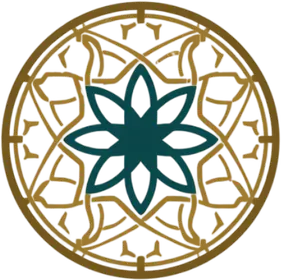
تقرأها المعلمة قبل التجهيز، وتراجع بها كل محطة قبل فتحها للأطفال.
إعداد البيئة قبل حضور الأطفال حتى يبقى وقت البرنامج للتطبيق والملاحظة.
تقسيم الأطفال إلى أربع مجموعات صغيرة متوازنة، ولكل مجموعة رمز لوني لا يحمل معنى شرعيًا.
بطاقة فيها أيقونات الأركان الثمانية ومكان لملاحظة المعلمة، ويستخدم ختم الركن فقط.
بطاقة القوانين أمام الطفل عند مدخل الركن، تليها بطاقة النشاط والأدوات المرتبة في صينية مستقلة.
المصحف وبطاقات الاعتقاد والحديث على حامل مرتفع، وتبقى تحت نظر المعلمة ولا تدخل في المناولة الحرة.
نسخة واحدة من قائمة الرصد لكل مجموعة، مع رموز: مستقل، بمساندة، يحتاج متابعة.
مسار واضح بين الأركان، ودقيقة هادئة لإعادة الأدوات إلى موضعها قبل الانتقال.
يمكن تمديد الزمن أو تقليله وفق عدد الأطفال، مع الحفاظ على دورة التطبيق كاملة.
| المرحلة | الزمن | التنفيذ |
|---|---|---|
| افتتاح جامع | 15 دقيقة | تحية وآداب المجلس، استرجاع سؤال الوحدة، بيان أن اليوم مراجعة لما علّمنا الله، وشرح جواز المرور وقوانين الانتقال. |
| الدورة الأولى | 4 × 12 دقيقة | أربع محطات، وبين المحطات دقيقتان للترتيب والانتقال الهادئ. |
| استراحة | 15 دقيقة | ماء ووجبة وحركة هادئة، مع تذكير عملي بنعمة الطعام وعدم الإسراف. |
| الدورة الثانية | 4 × 12 دقيقة | المحطات الأربع المتبقية بالطريقة نفسها. |
| معرض الأثر | 15 دقيقة | عرض مختارات من البناء واللغة واللوحة، ويربط كل طفل أثره بمعنى واحد تعلمه. |
| تقويم وإغلاق | 10 دقائق | أسئلة جامعة، توثيق الملاحظات، إعادة المعاني إلى عبودية الله، ثم كفارة المجلس. |
كل محطة تراجع أكثر من درس، وتنتج دليل أداء يمكن للمعلمة رصده.
يقرأ ترتيب كل محطة من اليمين: بطاقة قوانين الركن أولًا، ثم بطاقة النشاط أو بطاقة التنفيذ الخاصة باليوم الختامي.
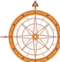
ركن أكتشف ما حولي · علّمني ربي: الليل والنهار، الشمس، القمر
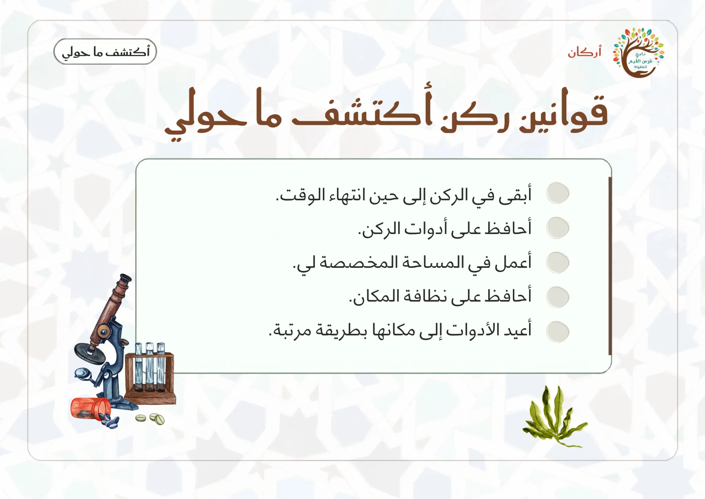
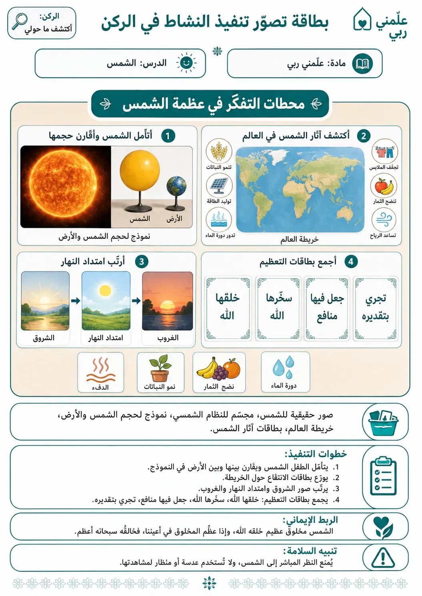
ركن أقرأ لأتعلم · كتابي المنير: المعاني الأربعة والمراجعة
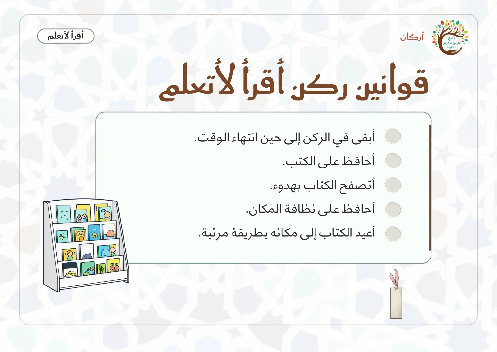
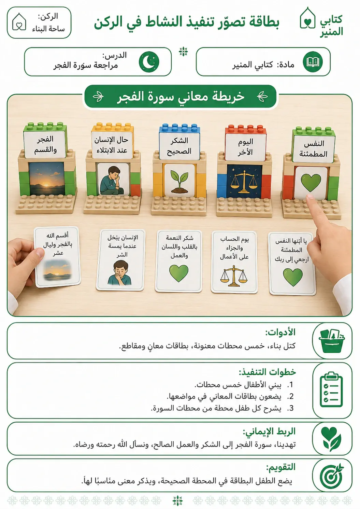
ركن أدرك وأستمتع · أحبك ربي + مواقف كتابي المنير
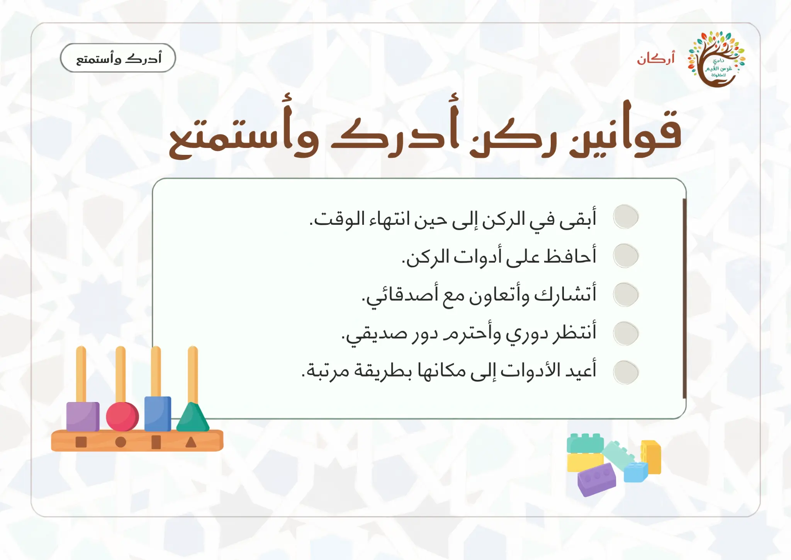
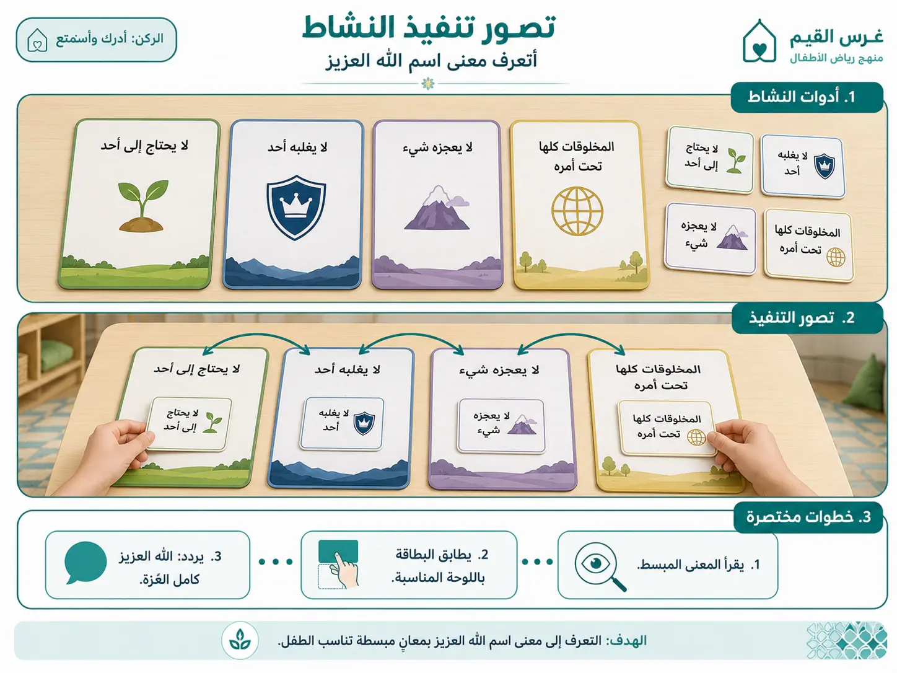
ركن المسكن · أعمال النهار والليل + آداب المساء
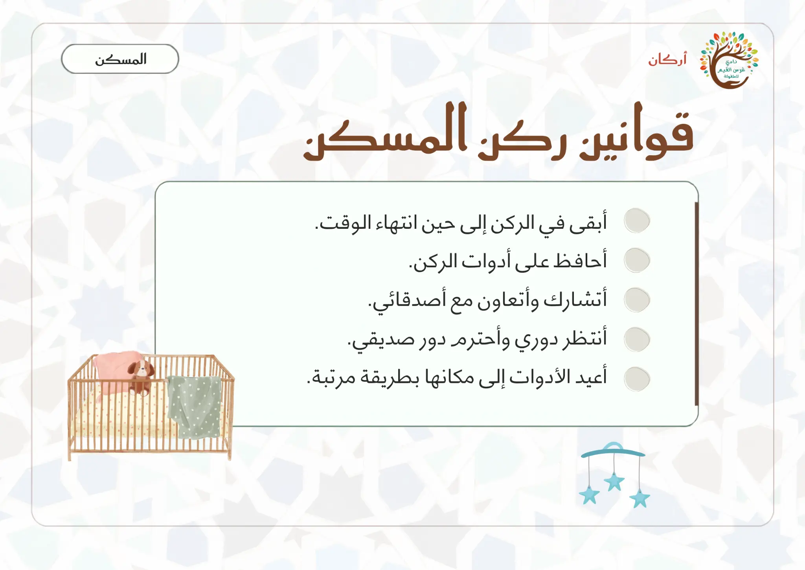
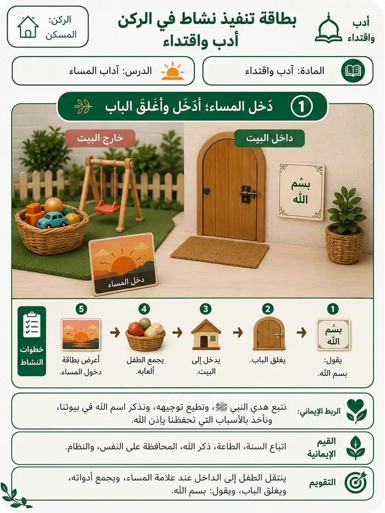
ركن الدكان · قال رسولي + الإحسان + الأعداد 10–12

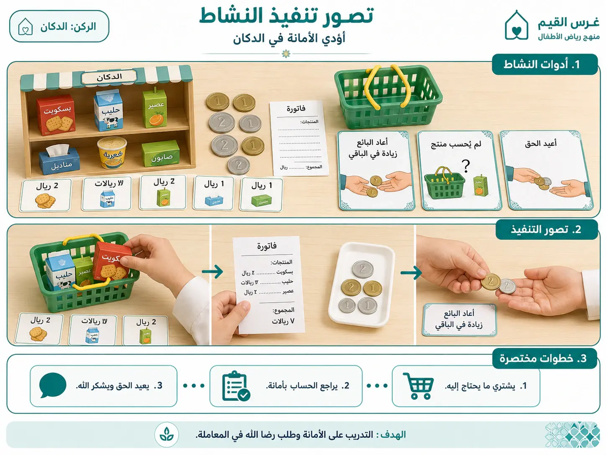
ركن ساحة البناء · مهاراتي + أعمال الوقت + اسم الله العزيز

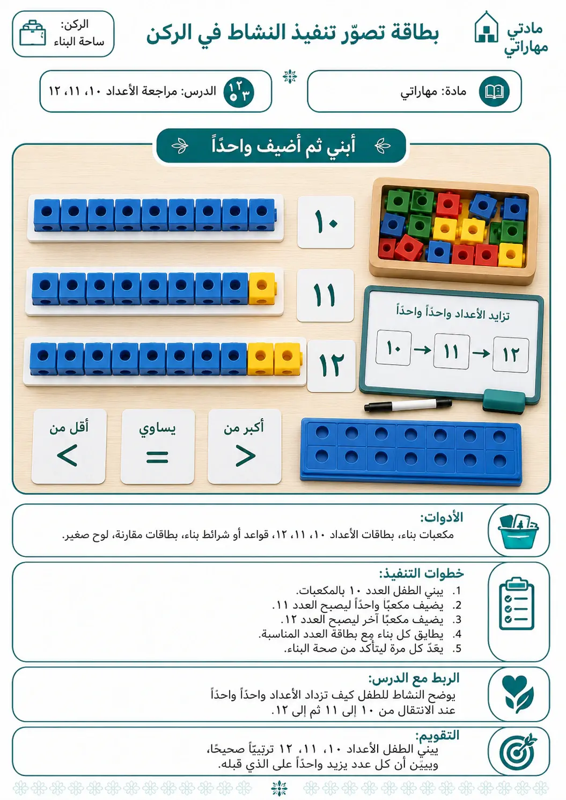
ساحة الرمل · لساني عربي + تثبيت الأعداد
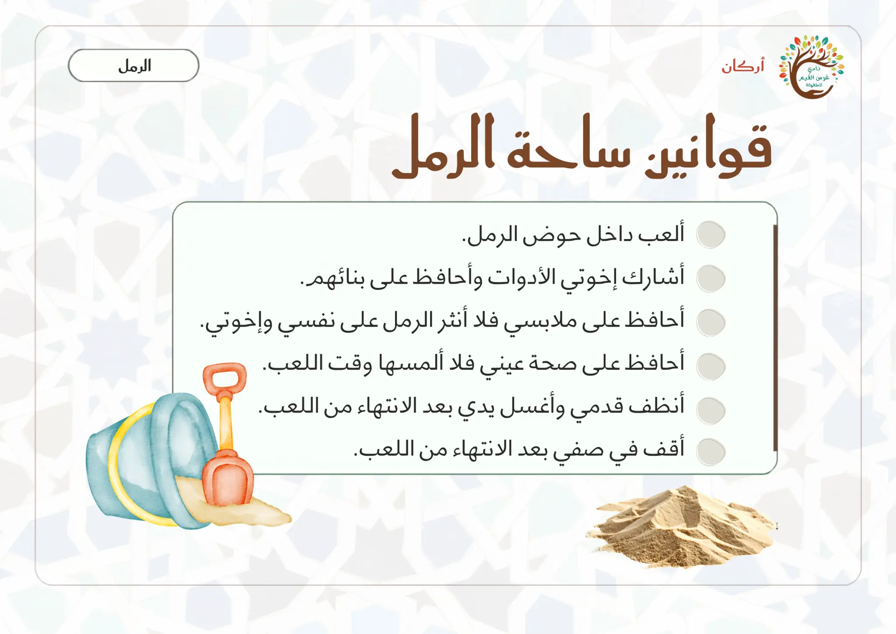
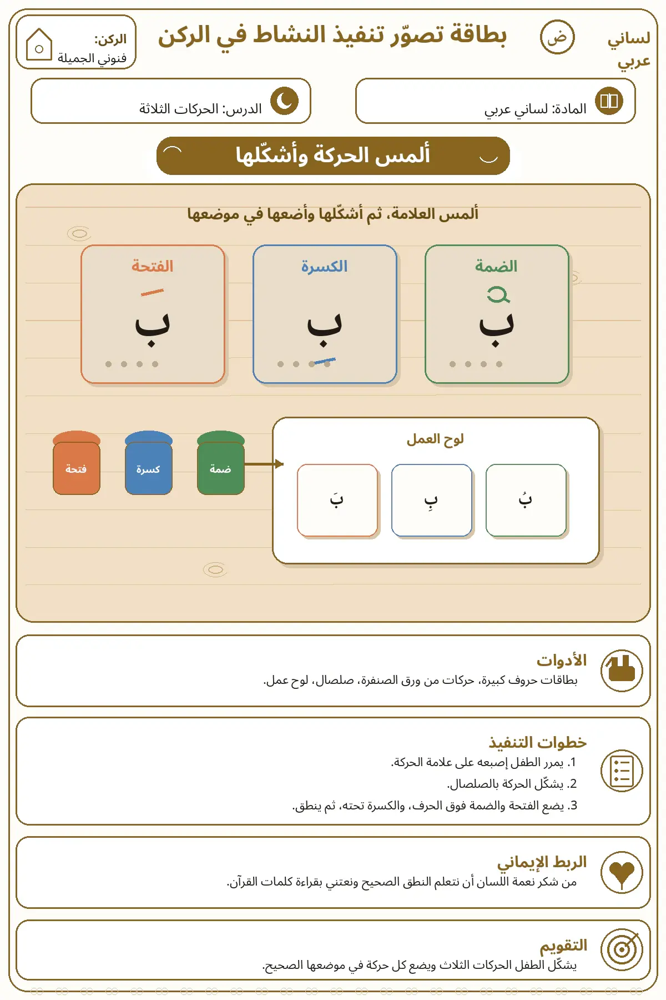
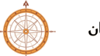
ركن فنوني الجميلة · خلاصة وجدانية وسلوكية للوحدة
 بطاقة غرسة الشكر والعمل
بطاقة تنفيذ خاصة باليوم الختامي
بطاقة غرسة الشكر والعمل
بطاقة تنفيذ خاصة باليوم الختامي
ترصد المعلمة الأداء أثناء اللعب، ولا تعيد اختبارًا لفظيًا طويلًا بعد انتهاء المحطات.
| المادة | مؤشر الأداء المشاهد | أين يظهر؟ | سؤال تحقق قصير |
|---|---|---|---|
| علّمني ربي | ينسب خلق الآيات وتسخيرها إلى الله، ويميز أعمال النهار والليل. | أكتشف ما حولي · المسكن | من خلق الشمس والقمر؟ وكيف أشكر نعمة الوقت؟ |
| كتابي المنير | يربط معاني السورة بالشكر والصبر والإحسان والعمل وطمأنينة القلب. | أقرأ لأتعلم · أدرك وأستمتع | ماذا أفعل عند النعمة؟ وما العمل الذي أقدمه اليوم؟ |
| أحبك ربي | يربط أسماء الله المدروسة بعبادة صحيحة دون نسبة الأثر للسبب. | أدرك وأستمتع · ساحة البناء | ممن أطلب الشفاء والمغفرة والعزة؟ |
| قال رسولي | ينسب النعمة إلى الله ويردد الذكر أو معناه في موضعه. | الدكان · الإغلاق | ممن أصبحت بك هذه النعمة؟ |
| أدب واقتداء | يرتب آداب المساء ويطبقها مع فهم أن الحفظ من الله. | المسكن | ماذا نفعل عند إغلاق الباب؟ ومن الحافظ؟ |
| لساني عربي | يميز الفتحة والكسرة والضمة صوتًا وموضعًا، ويقرأ كلمة بسيطة. | ساحة الرمل · أقرأ لأتعلم | ما الحركة؟ أين توضع؟ وكيف تغيّر الصوت؟ |
| مهاراتي | يبني أو يطابق كميات 10 و11 و12 ويتحقق بإعادة العد. | الدكان · ساحة البناء · الرمل | كيف عرفت أن هذه الكمية اثنا عشر؟ |
إعادة الأعمال المحسوسة إلى المعنى التعبدي قبل مغادرة البرنامج.
يختار الطفل أثرًا من ركن ويقول: ماذا فعلت؟
تسأله المعلمة: ماذا عرفت عن الله أو آياته أو نعمه؟
يذكر الطفل عمل شكر أو طاعة أو أدبًا نبويًا راجيًا توفيق الله.
سبحانك اللهم وبحمدك، أشهد أن لا إله إلا أنت، أستغفرك وأتوب إليك.